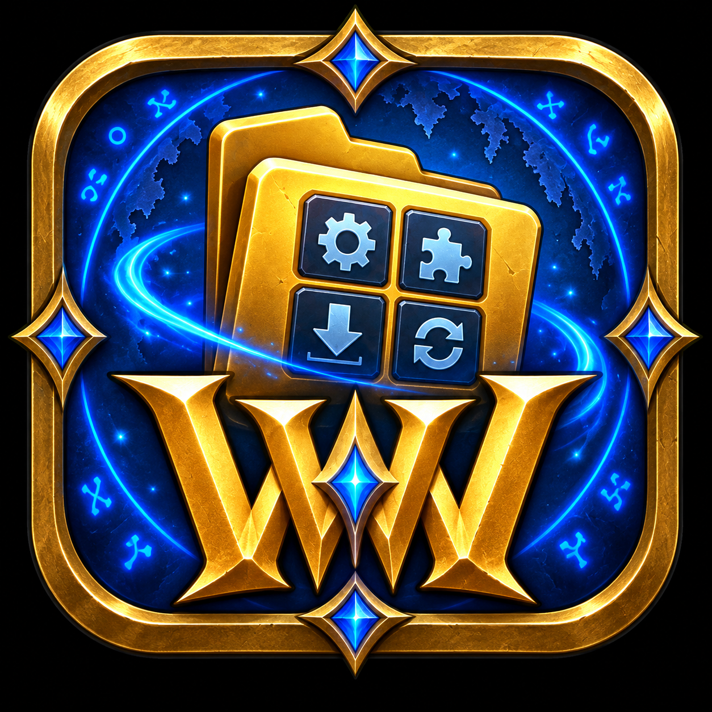

Shape your idea
Start with the problem you want to solve. Define one clear feature and decide what success looks like.

WinWAMCOMMUNITY PICKS
START BUILDING
Turn an idea into a working World of Warcraft addon. Learn what each file does, build useful features one step at a time, and test every change in-game.
YOUR LEARNING PATH
No addon experience required. Start with the fundamentals and build confidence through small, working examples.
Start with the problem you want to solve. Define one clear feature and decide what success looks like.
Create the addon structure, Lua logic, and interface a piece at a time while learning how each part works.
Install locally, reload the UI, read errors, and improve your addon without risking your existing setup.
LESSON 1 · ADDON ANATOMY
A WoW addon is a folder inside Interface/AddOns. The game reads its table-of-contents file first, then loads the files listed there from top to bottom.
THE MANIFEST
The TOC tells WoW what your addon is called, which game interface it supports, and which files to load.
## Interface: 120000
## Title: My First Addon
## Notes: Learning addon basics
## Author: Your Name
## Version: 0.1.0
MyFirstAddon.luaNotifications from the game—such as login, entering combat, or receiving loot—that your Lua code can listen for.
The building blocks of the interface. Frames can display content, receive events, and contain buttons, text, or textures.
Tables WoW writes to disk when you log out or reload, allowing your addon to remember settings.
Chat commands such as /hello that give your addon a quick, friendly way to accept input.
LESSON 2 · WOW APIs
An API—Application Programming Interface—is a set of functions, events, and UI objects Blizzard makes available to addon code. It is the safe vocabulary your Lua uses to ask the game for information or create interface elements.
Your addon can only do what the game exposes. Some actions are protected during combat, and some information is intentionally restricted.
START HERE
Search functions, events, widgets, examples, and differences between Retail and Classic.
Open documentation ↗OFFICIAL BLIZZARD RESOURCES
Type /api in WoW for Blizzard’s generated function and event reference. Visit the official UI & Macro forum for addon-development guidance and discussion.
“I want to know when the player enters the world.”
Search the API reference for PLAYER_ENTERING_WORLD.
Confirm availability for Retail, Classic, or the client you are targeting.
Try one event or function first, then add behavior after it works.
LESSON 3 · HELLO WORLD
Each example teaches one core concept. Copy it into MyFirstAddon.lua, type /reload in-game, and try it out.
EVENTS + CHAT
Create a frame, listen for the login event, and print a friendly message to the chat window.
UnitName("player").local frame = CreateFrame("Frame")
frame:RegisterEvent("PLAYER_LOGIN")
frame:SetScript("OnEvent", function()
print("Hello, Azeroth!")
end)